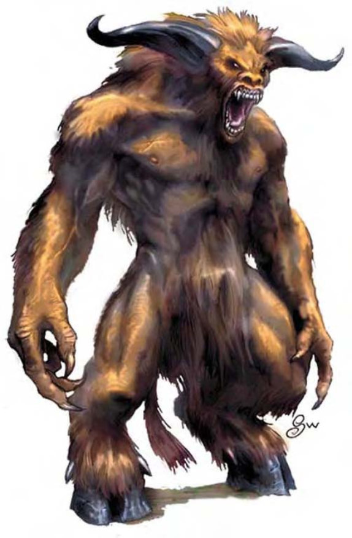

他们看起来像是高得出奇且肌肉发达的人类，浑身覆满毛皮，项上则是公牛头。凶残的黑色眼光中闪烁出狂野的怒气。
牛头人是具有强烈领土意识的强壮生物，常常可在巨大的地底迷宫中遇到。
牛头人的天生灵觉及野兽本能让他在最迷乱复杂的通道中亦可自由穿梭，对于狩猎、折磨敌人及毁灭入侵者等工作来说十分有用。
牛头人约7英尺高，重约700磅。
牛头人通晓巨人语。
牛头人偏好近战，以发挥他们强大的力气。
强力冲刺 (特异)：牛头人会低下头以巨角攻击这敌人，冲刺通常都是他们的战斗序曲。除了一般冲刺的优缺点外，他们的每次抵撞都具有+9攻击加值，并造成4d6+6点伤害。
天生灵觉 (特异)：虽然牛头人智力不是很高，但他们与生俱来就有很强的直觉及逻辑思考能力。此能力让牛头人对「迷宫术」效果免疫，使他们不会迷路，还能够对敌人进行追踪。此外，他们也不会受到措手不及状态的不利影响。
技能：牛头人在进行「搜索」、「侦察」与「聆听」技能检定时具有+4种族加值。
牛头人人物具有下列种族特性：
― +8力量、+4体质、-4智力 (最小3)、-2魅力。
― 大型：防御等级-1减值、攻击检定-1减值、「躲藏」检定-4减值、擒抱检定+4加值、举物及负重能力上限为中型人物的两倍。
― 占用空间/可触距离：10英尺 / 10英尺。
― 牛头人的基本行走速度为30英尺。
― 黑暗视觉可达60英尺。
― 种族生命骰：牛头人起始为6级人形怪物，生命骰6d8、基本攻击加值+6，强韧、反射与意志的基本豁免检定则分别是+2、+5及+5。
― 种族技能：牛头人的人形怪物等级使他的技能点数成为9x (2+智力调整值，最小1)。他的本职技能为威吓、跳跃、聆听、搜索与侦察。牛头人在进行「搜索」、「侦察」与「聆听」技能检定时具有+4种族加值。
― 种族专长：牛头人的人形怪物等级具有三个专长。
― 武器擅长：牛头人擅长巨斧及所有简易武器。
― +5天生防御加值。
― 天生武器：抵撞 (1d8)。
― 特殊攻击 (见前文)：强力冲刺。
― 特殊能力 (见前文)：天生灵觉、灵敏嗅觉。
― 母语：通用语、巨人语。额外语言：兽人语、地精语、土族语。
― 适合职业：野蛮人。
― 等级修正值：+2。
| 生命骰 | 6d8+12 (39HP) |
| 先攻 | +0 |
| 速度 | 30英尺 (6格) |
| 防御等级 | 14 (-1体型、+5天生)、接触9、措手不及― (见说明) |
| 基本攻击/擒抱 | +6 / +14 |
| 攻击 | 巨斧+9近战 (3d6+6/x3)；或抵撞+9近战 (1d8+4) |
| 全力攻击 | 巨斧+9/+4近战 (3d6+6/x3) 及抵撞+4近战 (1d8+2) |
| 占据/触及 | 10英尺 / 10英尺 |
| 特殊攻击 | 强力冲刺4d6+6 |
| 特殊能力 | 黑暗视觉60英尺、天生灵觉、灵敏嗅觉 |
| 豁免 | 强韧+6、反射+5、意志+5 |
| 属性 | 力量19、敏捷10、体质15、智力7、感知10、魅力8 |
| 技能 | 威吓+2、聆听+7、搜索+2、侦察+7 |
| 专长 | 强韧加强、猛力攻击、追踪 |
| 环境 | 地底 |
| 组织 | 单独、成双或成群 (3-4) |
| 宝藏 | 标准 |
| 阵营 | 通常混乱邪恶 |
| 进化 | 依人物职业而定 |
| 等级修正值 | +2 |